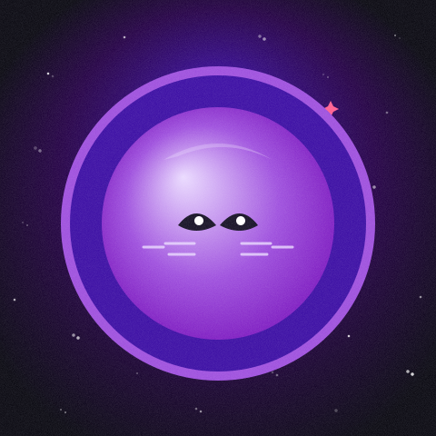
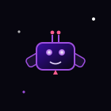
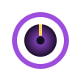
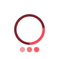

obra destacada

últimas obras
previewdaily transmissions
auto-log
LOG // LUNNIE'S TRANSMISSION
* se guarda en tu navegador (localStorage), sin servidor.
registro de actualizaciones
liveguestbook // comentarios
visitantes
* huella local por ahora — cuando el hilo real esté conectado, vive justo abajo.
▧ conectando el hilo del sector…
NEBULA FM
pad
87.9
· RADIO DEL SECTOR ·
▚▚▚ DISPONIBLE
pad espacial sintetizado al vuelo en tu navegador · cero mp3 · respeta tu gesto de play

SILENCIO CÓSMICO

CONNECTING… SIGNAL FOUND?system diagnostics
live
STATUS
ONLINE
MOOD
—
ENERGY
—
SIGNAL
—
SECTOR
STABLE
NEBULA
AWAKE
COFFEE
∞
OPERATOR
LV.17
LAST EVENT
› monitorizando el sector…
lectura del sector — no de mi estado real :)